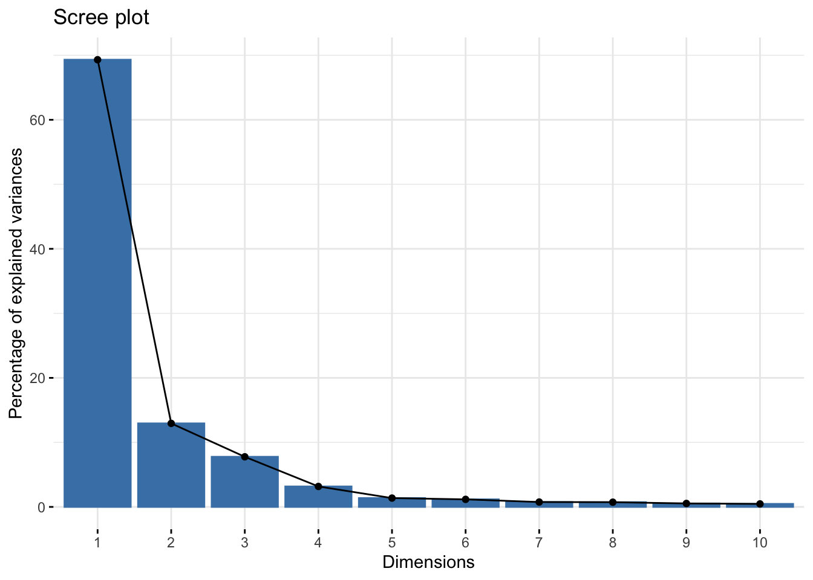
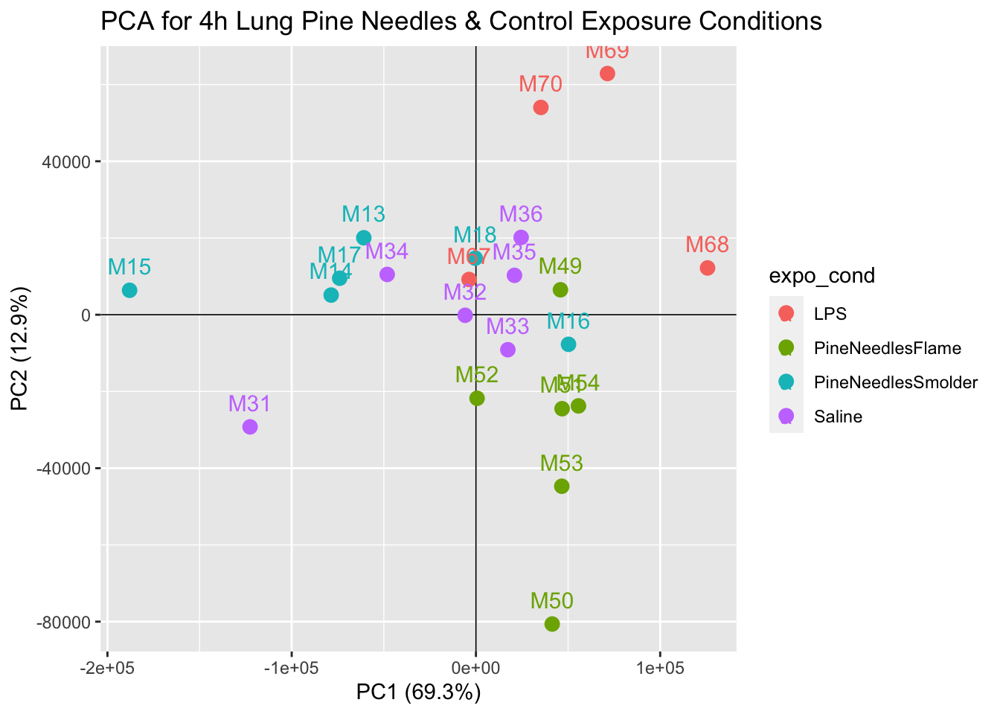
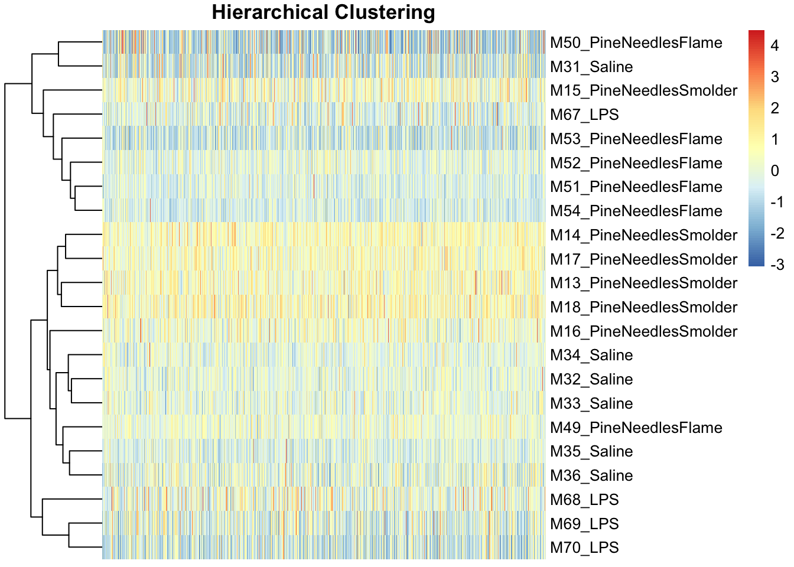

8.9 Transcriptomics Data QA/QC
After preparing your transcriptomic data and sample information dataframes for statistical analyses, it is very important to carry out QA/QC on your organized datasets, prior to including all samples and all genes in the actual statistical model. It is critical to only include high quality data that inform underlying biology of exposure responses/disease etiology, rather than data that may contribute noise to the overall data distributions. Some common QA/QC steps and associated data pre-filters carried out in transcriptomics analyses are detailed below.
8.9.1 Background Filter
It is very common to perform a background filter step when preparing transcriptomic data for statistical analyses. The goal of this step is to remove genes that are very lowly expressed across the majority of samples, and thus are referred to as universally lowly expressed. Signals from these genes can mute the overall signals that may be identified in -omics analyses. The specific threshold that you may want to apply as the background filter to your dataset will depend on the distribution of your dataset and analysis goal(s).
For this example, we apply a background threshold, to remove genes that are lowly expressed across the majority of samples, specifically defined as genes that have expression levels across at least 20% of the samples that are less than (or equal to) the median expression of all genes across all samples. This will result in including only genes that are expressed above background, that have expression levels in at least 20% of samples that are greater than the overall median expression. Script to apply this filter is detailed below:
# First count the total number of samples, and save it as a value in the global environment
nsamp <- ncol(countdata)
# Then, calculate the median expression level across all genes and all samples, and save it as a value
total_median <- median(as.matrix(countdata))
# We need to temporarily add back in the Gene column to the countdata so we can filter for genes that pass the background filter
countdata <- countdata %>% rownames_to_column("Gene")
# Then we can apply a set of filters and organization steps (using tidyverse language) to result in a list of genes that have an expression greater than the total median in at least 20% of the samples
# LAUREN -CAN YOU PLEASE ADD SOME HASHED NOTES TO THE RIGHT OF EACH OF THESE LINES DESCRIBING WHAT THIS IS DOING?
genes_above_background <- countdata %>%
pivot_longer(cols=!Gene, names_to = "sampleID", values_to="expression") %>%
mutate(above_median=ifelse(expression>total_median,1,0)) %>%
group_by(Gene) %>%
summarize(total_above_median=sum(above_median)) %>%
filter(total_above_median>=.2*nsamp) %>%
select(Gene)
# Then filter countdata for only the genes above background.
countdata <- left_join(genes_above_background, countdata, by="Gene")Here, the ‘countdata’ dataframe went from having 30,146 rows of data (representing genes) to 16,664 rows of data (representing genes with expression levels that passed this background filter)
8.9.2 Sample Filtering
Another common QA/QC check is to evaluate whether there are any samples that did not produce adequate RNA material to be measured using the technology employed. Thus, a sample filter can be applied to remove samples that have inadequate data. Here, we demonstrate this filter by checking to see whether there were any samples that resulted in mRNA expression values of zero across all genes. If any sample demonstrates this issue, it should be removed prior to any statistical analysis. Note, there are other filter cut-offs you can use depending on your specific study.
Below is example script that checks for the presence of samples that meet the above criteria:
# Transpose filtered countdata to allow for script that easily sums the total expression levels per sample
countdata_T <- countdata %>%
pivot_longer(cols=!Gene, names_to="sampleID",values_to="expression") %>%
pivot_wider(names_from=Gene, values_from=expression)
#MAYBE USE A HISTOGRAM TO SHOW THAT NO SAMPLES NEED TO BE REMOVED FOR HAVING NO EXPRESSION AND OMIT THE BELOW FILTER STEPS IF CONFUSING
#hist(rowSums(countdata_T[2:ncol(countdata_T)]), main="Expression Counts Distribution", xlab = "Expression Count")
# Then check whether all samples have at least some level of expression above zero
countdata_T$rowsum <- rowSums(countdata_T[2:ncol(countdata_T)])
# All samples have some expression so we don't need to omit any right now, but here is the script that could remove any samples that had this QA/QC issue
nrow(countdata_T %>% filter(rowsum==0))## [1] 0LAUREN - I’M NOT REALLY SURE WHERE THE ABOVE SCRIPT TAILS OFF - ARE WE SHOWING WHAT ONE MIGHT DO IN THE ACCOUNT THAT SAMPLES HAVE ROWSUM=0? IF SO, THIS FILTER ISN’T GRABBING ANYTHING / CREATING A DATAFRAME THAT IS MOVED FORWARD IN THE SCRIPT, GETS TRANSPOSED BACK INTO ITS ORIGINAL FORMAT, ETC. COULD WE DO THAT?
JULIA- YEAH THAT WAS THE IDEA. I PULLED THIS FROM THE ELGAN CODE WHERE IT WAS THE SAME DEAL, IN THAT NO SAMPLES NEEDED TO BE REMOVED FOR NOT HAVING ANY EXPRESSION, SO I ASSUMED IT WAS PART THE STANDARD PIPELINE TO AT LEAST SHOW. I HAVE NO STRONG OBJCETION TO REMOVING THIS, BUT ANOTHER IDEA IS TO SHOW A HISTOGRAM OR SOMETHING AFTER THAT FIRST BIT WHERE YOU INITIALIZE THAT TRANSPOSED COUNT DF, THEN REMOVE THE FILTERING STEPS IF THAT IS TOO CONFUSING. I’VE PUT THE CODE IN AND COMMENTED IT OUT.
8.9.3 Identifying & Removing Sample Outliers
Prior to final statistical analysis, raw transcriptomic data are commonly evaluated for the presence of potential sample outliers. Outliers can result from experimental error, technical error/measurement error, and/or huge sources of variation in biology. For many analyses, it is beneficial to remove such outliers to enhance computational abilities to identify biologically meaningful signals across data. Here, we present two methods to check for the presence of sample outliers:
1. Principal component analysis (PCA) can be used to identify potential outliers in a dataset through visualization of summary-level values illustrating reduced representations of the entire dataset. Note that a more detailed description of PCA is provided in Training Module 2.2. Here, PCA is run on the raw count data and further analyzed using scree plots, assessing principal components (PCs), and visualized using biplots displaying the first two principal components as a scatter plot.
2. Hierarchical clustering is another approach that can be used to identify potential outliers. Hierarchical clustering aims to cluster data based on a similarity measure, defined by the function and/or specified by the user. There are several R packages and functions that will run hierarchical clustering, but it is often helpful visually to do this in conjuction with a heatmap. Here, we use the package pheatmap (introduced in Training Module 1.4) with hierarchical clustering across samples to identify potential outliers.
Let’s start by using PCA to identify potential outliers, while providing a visualization of potential sources of variation across the dataset.
8.9.3.1 First we need to move the Gene column back to the rownames so our dataframe is numeric and we can run the PCA script
countdata <- countdata %>% column_to_rownames("Gene")
# Let's remind ourselves what these data look like
countdata[1:10,1:5] #viewing first 10 rows and 5 columns## M13_PineNeedlesSmolder M14_PineNeedlesSmolder
## 0610009B22Rik_56046 123 118
## 0610010F05Rik_69119 1378 1511
## 0610010F05Rik_74637 83 55
## 0610010K14Rik_31619 462 580
## 0610010K14Rik_31873 560 814
## 0610010K14Rik_68949 207 182
## 0610012G03Rik_58446 243 299
## 0610030E20Rik_65200 152 105
## 0610040J01Rik_55628 125 106
## 1110004F10Rik_77756 324 377
## M15_PineNeedlesSmolder M16_PineNeedlesSmolder
## 0610009B22Rik_56046 110 167
## 0610010F05Rik_69119 1534 936
## 0610010F05Rik_74637 57 13
## 0610010K14Rik_31619 625 560
## 0610010K14Rik_31873 680 799
## 0610010K14Rik_68949 104 202
## 0610012G03Rik_58446 294 327
## 0610030E20Rik_65200 92 87
## 0610040J01Rik_55628 127 107
## 1110004F10Rik_77756 356 233
## M17_PineNeedlesSmolder
## 0610009B22Rik_56046 147
## 0610010F05Rik_69119 1301
## 0610010F05Rik_74637 54
## 0610010K14Rik_31619 604
## 0610010K14Rik_31873 707
## 0610010K14Rik_68949 166
## 0610012G03Rik_58446 262
## 0610030E20Rik_65200 150
## 0610040J01Rik_55628 93
## 1110004F10Rik_77756 2768.9.3.2 Then we can calculate principal components using transposed count data
8.9.3.3 And visualize the percent variation captured by each principal component (PC) with a scree plot.
# We can generate a scree plot that shows the eigenvalues of each component, indicating how much of the total variation is captured by each component
fviz_eig(pca)
This scree plot indicates that nearly all variation is explained in PC1 and PC2, so we are comfortable with viewing these first two PCs when evaluating whether or not potential outliers exist in this dataset.
8.9.3.4 Further visualization of how these transcriptomic data appear through PCA can be produced through a scatter plot showing the data reduced values per sample:
# Calculate the percent variation captured by each PC
pca_percent <- round(100*pca$sdev^2/sum(pca$sdev^2),1)
# Make dataframe for PCA plot generation using first two components and the sample name
pca_df <- data.frame(PC1 = pca$x[,1], PC2 = pca$x[,2], Sample=colnames(countdata))
# Organize dataframe so we can color our points by the exposure condition
pca_df <- pca_df %>% separate(Sample, into = c("mouse_num", "expo_cond"), sep="_")
# Plot PC1 and PC2 for each sample and color the point by the exposure condition
ggplot(pca_df, aes(PC1,PC2, color = expo_cond))+
geom_hline(yintercept = 0, size=0.3)+
geom_vline(xintercept = 0, size=0.3)+
geom_point(size=3) +
geom_text(aes(label=mouse_num), vjust =-1, size=4)+
labs(x=paste0("PC1 (",pca_percent[1],"%)"), y=paste0("PC2 (",pca_percent[2],"%)"))+
ggtitle("PCA for 4h Lung Pine Needles & Control Exposure Conditions")
With this plot, we can see that samples do not demonstrate obvious groupings, where certain samples group far apart from others. Therefore, our PCA analysis indicates that there are unlikely any sample outliers in this dataset.
8.9.3.5 Now lets implement hierarchical clustering to identify potential outliers
First we need to create a dataframe of our transposed ‘countdata’ such that samples are rows and genes are columns to input into the clustering algorithm.
countdata_for_clustering <- t(countdata)
countdata_for_clustering[1:5,1:10] # viewing what this transposed dataframe looks like## 0610009B22Rik_56046 0610010F05Rik_69119
## M13_PineNeedlesSmolder 123 1378
## M14_PineNeedlesSmolder 118 1511
## M15_PineNeedlesSmolder 110 1534
## M16_PineNeedlesSmolder 167 936
## M17_PineNeedlesSmolder 147 1301
## 0610010F05Rik_74637 0610010K14Rik_31619
## M13_PineNeedlesSmolder 83 462
## M14_PineNeedlesSmolder 55 580
## M15_PineNeedlesSmolder 57 625
## M16_PineNeedlesSmolder 13 560
## M17_PineNeedlesSmolder 54 604
## 0610010K14Rik_31873 0610010K14Rik_68949
## M13_PineNeedlesSmolder 560 207
## M14_PineNeedlesSmolder 814 182
## M15_PineNeedlesSmolder 680 104
## M16_PineNeedlesSmolder 799 202
## M17_PineNeedlesSmolder 707 166
## 0610012G03Rik_58446 0610030E20Rik_65200
## M13_PineNeedlesSmolder 243 152
## M14_PineNeedlesSmolder 299 105
## M15_PineNeedlesSmolder 294 92
## M16_PineNeedlesSmolder 327 87
## M17_PineNeedlesSmolder 262 150
## 0610040J01Rik_55628 1110004F10Rik_77756
## M13_PineNeedlesSmolder 125 324
## M14_PineNeedlesSmolder 106 377
## M15_PineNeedlesSmolder 127 356
## M16_PineNeedlesSmolder 107 233
## M17_PineNeedlesSmolder 93 276Next we can run hierarchical clustering in conjunction with the generation of a heatmap. Note that we scale these data for improved visualization.
pheatmap(scale(countdata_for_clustering), main="Hierarchical Clustering",
cluster_rows=TRUE, cluster_cols = FALSE,
fontsize_col = 7, treeheight_row = 60, show_colnames = FALSE)
Like the PCA findings, heirarchical clustering demonstrated an overall lack of potential sample outliers because there were no obvious sample(s) that grouped separately from the rest along the clustering dendograms.
Therefore, neither approach points to outliers that should be removed in this analysis.